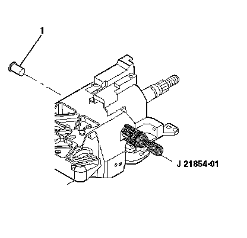
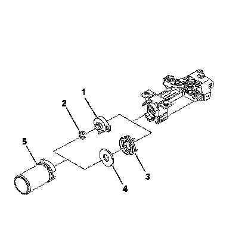
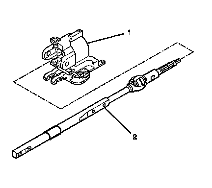
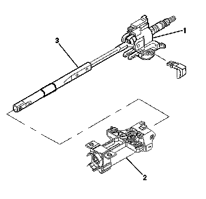
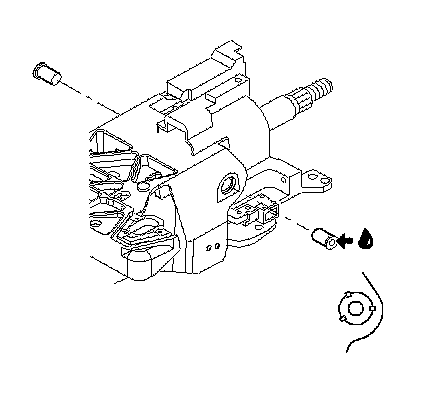

Steering Wheel Position Sensor or Steering Shaft Lower Bearing Replacement
Steering Wheel Position Sensor or Steering Shaft Lower Bearing Replacement
Tools Required
J 21854-01 Pivot Pin Remover
Removal Procedure

Caution: Refer to SIR Caution (SIR Caution) .
1. Disable the SIR system. Refer to SIR Disabling and Enabling (Service and Repair) .
2. Remove the steering column from the vehicle. Refer to Steering Column Replacement (Steering Column Replacement) .
3. Remove the turn signal switch housing. Refer to Steering Column Tilt Head Replacement (Steering Column Tilt Head Replacement) .
4. Remove the tilt spring only. Refer to Steering Column Tilt Spring Replacement (Steering Column Tilt Spring Replacement) .
5. Remove 2 pivot pins (1) from the steering column support assembly using J 21854-01 .

6. Remove the boot seal (5).
7. If sensor is not present, remove the following:
1. The steering shaft seal (4)
2. The sensor retainer (3)
8. If sensor is present, remove the following:
1. The sensor locator (2)
2. The sensor assembly (1)
Installation Procedure
1. If sensor is not present, install the following:
1. The sensor retainer (3)
2. The steering shaft seal (4)
2. If sensor is present, install the following
1. The sensor assembly (1)
The sensor assembly must be aligned to the 9 o'clock position.
2. The sensor locator (2)
3. Install the boot seal (5)

4. Install the steering shaft assembly (2) into the steering column tilt head assembly (1).

5. Install the tilt head assembly (1) and the steering shaft (3) into the steering column jacket assembly (2).

Important: Replace the steering column support assembly if the steering column support assembly has been staked 3 times.
6. Lubricate the pivot pins with GM P/N 12346293 (Canadian P/N 992723). Install the 2 pivot pins onto the steering column support assembly. Stake the pins in 3 places.
7. Install the tilt spring assembly only. Refer to Steering Column Tilt Spring Replacement (Steering Column Tilt Spring Replacement) .
Caution: Refer to SIR Inflator Module Coil Caution .
8. Install the turn signal switch housing. Refer to Steering Column Tilt Head Replacement (Steering Column Tilt Head Replacement) .
9. Install the steering column to the vehicle. Refer to Steering Column Replacement (Steering Column Replacement) .
10. Enable the SIR system. Refer to SIR Disabling and Enabling (Service and Repair) .